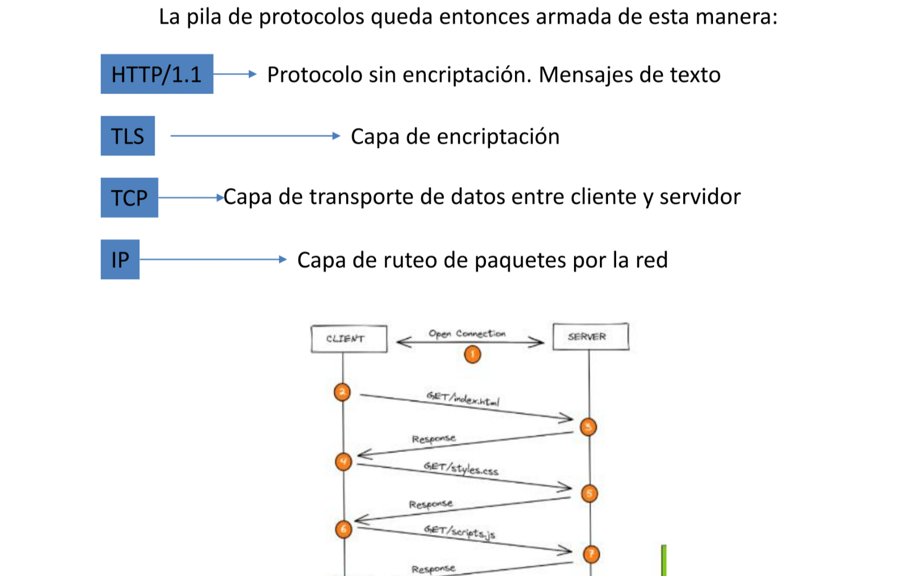
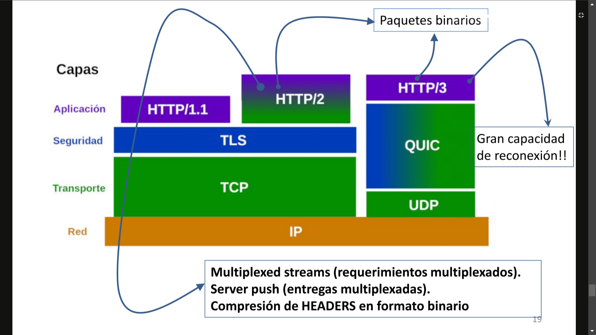

1-Sobre que protocolo binario está montado el protocolo HTTP
El protocolo HTTP esta montado sobre el protocolo TCP/IP. TCP/IP define cuidadosamente cómo se mueve la información desde el remitente hasta el destinatario. En primer lugar, los programas de aplicación envían mensajes o corrientes de datos a uno de los protocolos de la capa de transporte de Internet, UDP (User Datagram Protocol) o TCP (Transmission Control Protocolo). Estos protocolos reciben los datos de la aplicación, los dividen en partes más pequeñas llamadas paquetes, añaden una dirección de destino y, a continuación, pasan los paquetes a la siguiente capa de protocolo, la capa de red de Internet.
La capa de red de Internet pone el paquete en un datagrama de IP (Internet Protocol), pone la cabecera y la cola de datagrama, decide dónde enviar el datagrama (directamente a un destino o a una pasarela) y pasa el datagrama a la capa de interfaz de red. La capa de interfaz de red acepta los datagramas IP y los transmite como tramas a través de un hardware de red específico, por ejemplo redes Ethernet o de Red en anillo.
2-¿Cuáles son los clientes http y los servidores http mas utilizados?
Los clientes HTTP mas usados son:
- Apache HTTP Client
- Aws HTTP Client
- Url Connection HTTP Client
- Netty Nio Async HTTP Client
3-Que verbos admite un comando en el requerimiento HTTP
Los comandos son:
-
GET: Solo lectura.
-
PUT: Utilizado para crear recursos en el servidor.
-
DELETE: Utilizado para borrar recursos en un servidor.
-
POST: Utilizado normalmente para actualizar recursos en un servidor.
4-Que contenido lleva el body de un requerimiento HTTP
En el body de los mensajes de requerimiento se pueden encontar datos en cualquier formato. Como por ejemplo datos de un formulario o files enviados en un proceso de upload.
5-Que diferencia existe entre un URL y un URI
El URL es el que contiene el conjunto http://nombreHost.dominioHost:puerto + URI. Esta data la necesita el navegador primero para consultar la IP de destino al servidor de nombres configurado y luego para establecer la conexión TCP con dicho destino.
URI(Uniform Request Identifier): es donde se referencia a los recursos solicitados. Por ejemplo /index.html o /clientes
6-Como se almacena información relacionada con las respuestas http
Mediante el cache del navegador se almacena informacion de las respuestas que dio el servidor de requerimientos anteriores. Dos de los métodos usados para saber si el recurso fue modificado o no son:
-Mediante la fecha de modificacion: que lee la fecha en la que fue modificado por última vez, y si es anterior es a la ultima vez que se le solicto envia una respuesta en el header "Modified = Not Modified" y el navegador carga el recurso de su cache.
-Mediante un Etag: parecido al anterior, pero en vez de usar la fecha le coloca una etiqueta a cada archivo en el servidor en la que fue modificado por última vez. El cliente envia el etag, se lo compara en el serve. Si no fue modificado devuelve una respuesta con "not Modified".
7-Que significa Virtual hosting
El virtualhost, o servidor virtual, es una forma de alojamiento web que permite que varias páginas web puedan funcionar en una misma máquina. Hay dos tipos de virtualhost:
Los que se basan en direcciones IP, donde cada página web tendrá una IP diferente.
Los que se basan en nombres de dominio, donde una sola dirección IP funcionan varias páginas web.
Aunque el navegador tendrá que diferenciar el tipo de virtualhost a la hora de gestionar la petición, la elección de una u otra no tiene ningún efecto para el usuario.
8-Porque el HTTP se considera STATE LESS
HTTP es considerado STATE LESS porque no puede mantener la conexion después de una determinada cantidad de mensajes y respuestas. Porque es muy dificil mantener el estado de una aplicacion.
9-Como va a mejorar la velocidad de la WEB en poco tiempo
HTTP/2 es un protocolo binario que conserva la misma semántica que el protocolo HTTP1.1 compactando cabeceras, prioritizando elementos a transferir y multiplexando sin esperar respuestas. Esto que significa que todos los verbos, cabeceras, etc. siguen funcionando sin cambios. De hecho, HTTP/2 busca resolver y compensar los problemas de velocidad que tiene la comunicación a través TCP (la capa de transporte dentro del protocolo HTTP)
10-Como va a mejorar el comportamiento de una aplicación WEB en ambientes ruidosos o de débil conexión
Va a mejorar mediante la implementacion de HTTP3, ya que va estar basado sobre el protocolo QUIC, ya que es mas eficaz que TCP y UDP(son los que se basan HTTP/1.1 y HTTP/2)
